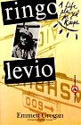
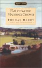
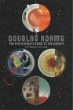
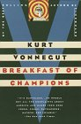
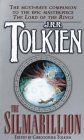
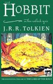
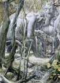

Books
These are books that aren't necessarily about the world etc, but that I have read and enjoyed. I couldn't for instance mention my favourite books on the other pages, without having a place for Tolkien's works somewhere. For those looking for a lighter hearted read, hopefully you will find something here.
|  | Ringolevio : Emmett Grogan |
| By the time Emmett Grogan was 21, he had been halfway round the world, had dealings with the Mafia, the IRA, been in prison, been addicted to heroin (which eventually killed him) and many other things. His autobiography is a rollicking tale, every chapter is enjoyable, and there is a kind of voyuerism in watching this anti hero traverse situations that we probably wouldn't be comfortable in ourselves. He is not someone to emulate, but you cannot help but admire him in parts of the book. Most of the book I enjoyed, but where it went beyond that and had a profound influence on me, was when he arrives on the corner of Haight Ashbury in San Francisco during the height of the sixties. He sets up a free shop, where he goes to great effort to acquire all sorts of things including food and simply gives them away. To me this was like a shifting of the known laws of the known universe, that people could be motivated by wishing to help other people rather than only by self interest. This has had a profound affect on my life, my thinking and my opposition to the current capitalist ethic that rules our society. Anyway this became something of a cult book amongst my friends, one of my friends said it was her favourite book at the time, but for some reason people I have hung out with since haven't taken to the book in the same way. Perhaps you had to have lived in a certain mindframe to empathise with Emmett, perhaps me and the friends I grew up with shared experiences that resonate with this book, experiences that others might not understand. Whatever is the case we loved this book and I recommend it particularly if you are someone in their early twenties, who would like to expand their mind in unforeseen ways. |
|  | Far from the Madding Crowd : Thomas Hardy |
| There are many reasons I have read one book or another, and with this one it was for no better reason than that I liked the title. It had stuck in my head for some reason, and so I had no other option than to read the book. How can you not like a book where the main female in the role is named like an exotic goddess, Bathsheba Everdene. Certainly the male characters in the book find her irresistable, and this is the centre of a beautiful tale set in the English countryside. I have recommended it to others, my sister who really enjoyed it and my partner at the time who bought her own copy after I thwarted her attempts at keeping mine :) When I finally finished this book it left me feeling good, I actually felt like I had spent some carefree time in the English countryside, far from the madding crowd. |
|  | The Hitch Hiker's Guide to the Galaxy : Douglas Adams |
| Hitchhikers, as it is known to its geeky fans, is a classic. Douglas Adams has such delightful turns of thought, that one can forgive his complete bastardization of the word trilogy. Whether one forgives him or not is probably of no matter to Douglas Adams himself, as he has now booked a permanent table at the restaurant at the end of the universe, at which we will all one day find ourselves. Its basic plot revolves around a man called Arthur Dent who is whisked off Earth shortly before it is to be destroyed to make way for an interstellar bypass and led around the galaxy by his friend Ford Prefect. Ford Prefect as it happens is a writer for the remarkable electronic book, the Hitch Hiker's Guide to the Galaxy, which is a terribly useful book to have should one require the occasional filler narrative in a trilogy in many parts you happen to be writing. As they hurtle through space, they team up with Trillian the last remaining female human who herself has been lured from Earth by galactic president, and generally cool and froody dude, Zaphod Beeblebrox, who had less than noble intentions both in saving Trillains life and in leading the galaxy. Now for someone with my own turn of thought, you are really thumbing through the book waiting for Trillian, the last human female, and Arthur, the last human male, to get it on and ensure the survival of the species. Just so you don't live in suspense, I can't remember whether they ever do get it on or not. If on the other hand you wanted to know whether Arthur and Trillian get it on, and not just whether I remembered whether they do, you will have to continue to live in suspense. This is a great book, extremely funny, very, very geeky, and finally answers the question we've all been wanting to know (other than whether I remember whether Trillian and Arthur get it on) which is what is 7 times 6. To find the answer to that, you will just have to read the books. |
|  | Breakfast of Champions : Kurt Vonnegut Jr. |
| In my opinion this is a literary masterpiece. The genius of the writing, where reality and the book blur, is something I've never experienced in a book before, to be taken on a mind trip. On the back of the book the New York Times has said "Vonnegut performs considerable complex magic...he very nearly levitates", and I couldn't agree more. The book is about Dwayne Hoover car salesman, all round respected guy, his descent into madness and his eventual meeting of the great science fiction writer Kilgore Trout. I'm not sure how much else I can tell you about it without giving too much away. I recommended this to a friend, and he read it, next I knew he was then searching for more Vonnegut books, exactly has I had done many years ago when a friend of mine lent me Welcome to the Monkeyhouse by Vonnegut. If you haven't read anything by Kurt Vonnegut Jnr, then you have missed a truly great modern writer. Welcome to the Monkeyhouse, God Bless you Mr Rosewater, Jailbird, Cat's Cradle, the Sirens of Titan and many others, get one read it, procure more... |
|  | The Silmarillion : J. R. R. Tolkien |
| The Silmarillion is the book to which the Lord of the Rings and the Hobbit owe their lineage. Tolkien was a great admirer of language, and he invented the realm of middle earth partly as a setting for the invention of new dialects he created. It encompasses the ages of Middle Earth well before the setting of the Lord of the Rings, when the Gods walked about Middle Earth and the elves were yet to arrive. It tells the story of the Numenoreans from whom Aragorn claims his descent, and their fall from grace and banishment to Middle Earth. It tells of the struggles between the gods who paid allegiance to Illuvatar and the evil Morgoth, of whom Sauron was just a servant. This is a work of sweeping grandeur, which I don't believe has ever been give its place in English literature as the Lord of the Rings and the Hobbit have. In the vastness of its scope it is something of a cross between the old testament and Homer, told with the literary skill of Shakespeare, it's almost too good and too vast to be popular. |
|  | The Hobbit : J. R. R. Tolkien |
| The Hobbit is a seminal book in my life. Although I read a little when I was very young, I fell out of the habbit, and sport, movies, tv took over. When I was about fourteen a friend of mine lent me the Hobbit, and I took it away with me on a holiday. I became completely absorbed in the book, when I looked away over the fields at night I could imagine Tolkiens orcs creeping silently towards me through the grass. I ended up reading the Hobbit many times and it reignited my love of reading. From there I devoured everything I could find of Tolkiens, the Lord of the Rings, the Silmarillion, Unfinished Tales, Farmer Giles of Ham, Smith of Wotton Major, Leaf by Niggle, even some translated poems. From there I went onto other books, indeed I have never stopped reading. Anyway back to the book, the crux of the book is Bilbo, indeed he is "The Hobbit". One of the things I liked about it as a child, that it is not a story about a child, but one could still empathise with the Hobbit, being about the same size as a child, somewhat sheltered from the world. He is taken far from the comfort of his home, through fantastical adventures and trials, all the while discovering reserves of courage and wisdom he never knew he had. I think that is a great message for children, but I also think adults who don't take themselves too seriously might also enjoy this as a light read. The book starts out in a very storytellerish manner, but as it goes on the writing style matures, so I recommend if you start it, make the effort to finish it or you will have missed out on what it is about. Finally it is also the precursor to the Lord of the Rings, so to find out where the ring and Gollum came from you will just have to read it. |
|  | The Lord of the Rings : J. R. R. Tolkien |
| Since the movie marketing machine of U.S. economic imperialism sprang into action there is little need to explain much about the Lord of the Rings to people. Even before the movies it was one of the most widely revered books written in the english language. It won a number of polls on the greatest book of the twentieth century, and if I were to consider a book in isolation from the culture in which it exists, I might agree. I have not read this book since at least the early nineties but I almost don't need to as I still remember minute details about it. It transported me to another world, where elves never died, the good triumphed and evil doers got what was coming to them. Many books attempt to modify reality, Tolkein created reality anew, if not in all it's complexity, then closer to it than any before, or perhaps after him have. His mastery of the language is evident on every page, though one fears his subtle use of words might be lost on a generation that reveres action rather than substance in their entertainment. Anyone who has seen the movies will be aware that their is voluminous action in the Lord of the Rings, but to see the novels as based on action misses the point. Reading about a battle is not the same as watching someone have their leg severed in the movie, in reading there is never any point where the real world has to intrude. The Lord of the Rings is fantasy of the purest order, fantasy from a world rent with world war, faschism, and the seeping destruction of the natural world. Tolkein is a literary genius, one should read this book to admire a wizard of language in the full flight of fantasy. |
If there is a book you think I should read, send me the reasons why and I will see if I can get around to it. If you are really keen send it to me.
You can search and purchase books from this Amazon box...